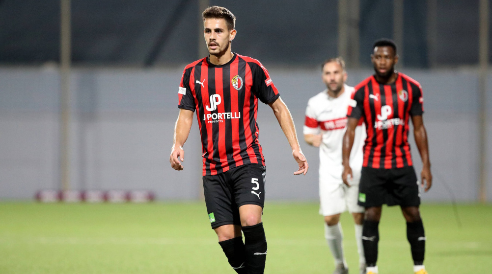

The club represents the town of Ħamrun, an urban community with strong industrial and commercial roots just a couple of kilometres inland from the Grand Harbour. It boasts one of the most passionate set of fans, who were also decorated with the honour of best support in Malta a few years back.
The Club has also set a number of important milestones for Maltese football in international commitments, being the first to quality to a second round of a UEFA club competition, and also the first to win home and away ties, a feat established in the Cup Winners Cup.
 The Senior team currently plays in the Premier Division. The Club also includes within its ranks a Youth Team, also known as Minors (Under 19), as well as an affiliate Football Academy which provides elite training to children aged four upwards.